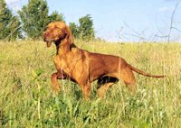
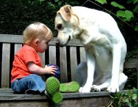
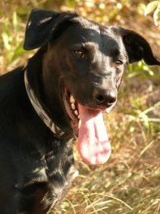

VIZSLA, AZ IGAZI VADÁSZKUTYA
Játékos és intelligens. A leginkább kötődő, legsokoldalúbb kutya. Szépségével, ragaszkodásával, bárkit levesz a lábáról. Nyugodt. Rövid szőre és barátságos természete miatt bátran ajánlható lakásba is. Jóindulatú, kissé érzékeny lelkű, a durvaságot nem viseli el. Nagyon játékos, imád dolgozni, vadászni. Lehet, hogy kedvenc fotelunkat elorozza, de nem lehet rá haragudni. Kitűnő vadász- és sportkutya, odaadó társ, de a betörőt nem rettenti el.
LABRADOR, A CSALÁDSZERETŐ
 kiáll. Alakíthatósága lehetőséget biztosít arra, hogy ne csak vadásszanak vele, hanem kábítószer kereső, vagy vakvezető kutyát képezzenek belőle. Kifejezetten családszerető, rajong a gyerekekért, szeret velük hancúrozni, szinte mindent eltűr tőlükFOXTERRIER, A JÁTÉKOS
Bolondos, igazi mókamester. Gazdája sohasem fog unatkozni, mindig képes megnevettetni kétlábú falkavezérét. Bármilyen kicsi is egy foxi, következetes nevelést igényel kölyökkorától kezdve, ha nem akarjuk, hogy a fejünkre nőjön. Megfelelő motivációval gyorsan tanulnak, hiszen rendkívül intelligensek. Nem szabad azonban lebecsülni a foxterrier veleszületett vadászszenvedélyét, és nagy hangsúlyt kell fektetni a behívás tanítására, hogy bármilyen szituációban magunkhoz hívhassuk kutyánkat.
JÁTSZÓTÉRI CSÁSZÁRKEVEREÉK
Mindezen kutyák legjobb tulajdonságainak keveréke, az én kutyám: